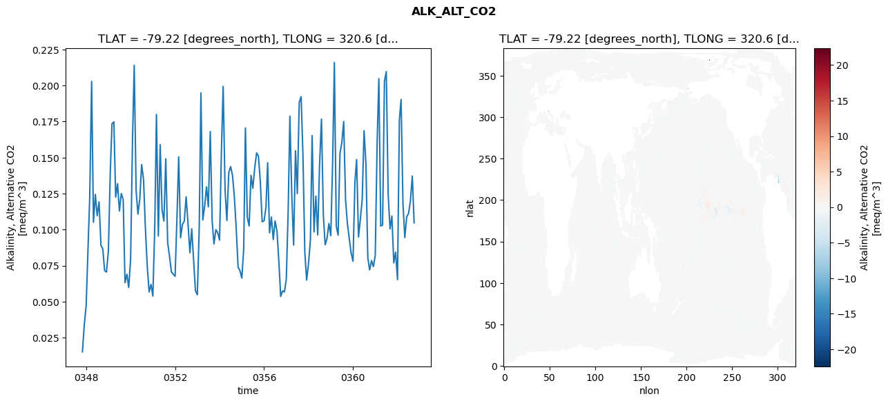
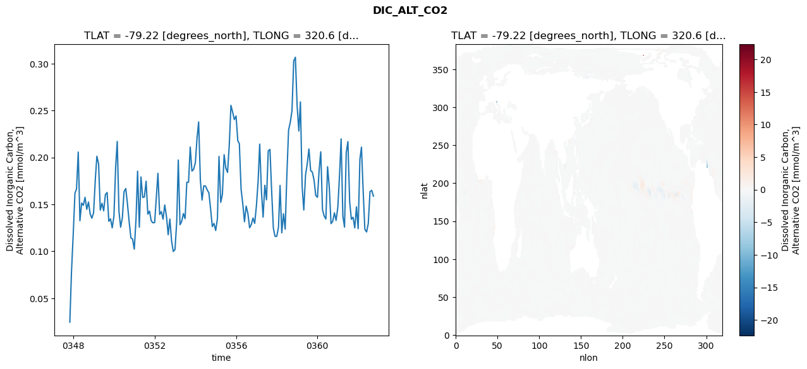
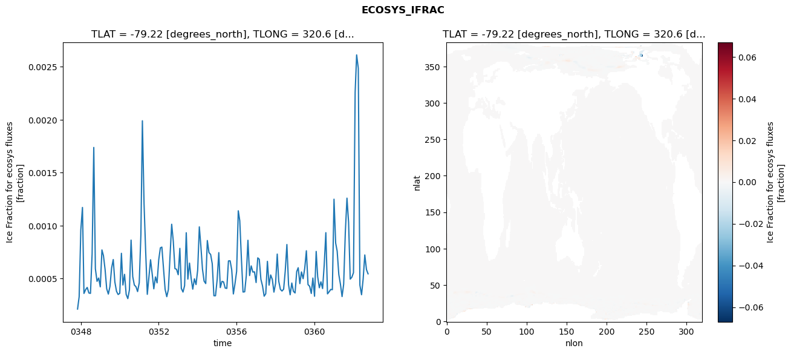
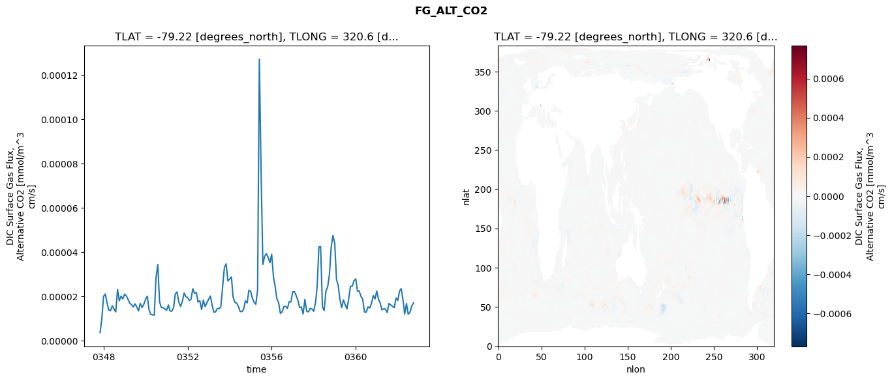

glb-dor_North_Atlantic_basin_015_1999-10-01_00063#
Simulation details#
Case: smyle.cdr-atlas-v0.glb-dor_North_Atlantic_basin_015_1999-10-01_00063.001
Basin: North_Atlantic_basin
Polygon: 15.0
Start date: 1999-10
Show code cell source Hide code cell source
import xarray as xr
import matplotlib.pyplot as plt
Show code cell source Hide code cell source
zarr_store = "/path/to/zarr/store"
# Parameters
zarr_store = "/global/cfs/projectdirs/m4746/Projects/Ocean-CDR-Atlas-v0/data/validation/smyle.cdr-atlas-v0.glb-dor_North_Atlantic_basin_015_1999-10-01_00063.001.validation.zarr"
Show code cell source Hide code cell source
%%time
ds_o = xr.open_zarr(zarr_store).compute()
ds_o
CPU times: user 689 ms, sys: 493 ms, total: 1.18 s
Wall time: 1.51 s
<xarray.Dataset> Size: 2MB
Dimensions: (nlat: 384, nlon: 320, time: 180)
Coordinates:
TLAT float64 8B -79.22
TLONG float64 8B 320.6
ULAT float64 8B -78.95
ULONG float64 8B 321.1
* time (time) object 1kB 0347-11-01 00:00:00 ... 0362-10-01 0...
z_t float32 4B 500.0
Dimensions without coordinates: nlat, nlon
Data variables:
ALK_ALT_CO2_diff (nlat, nlon) float32 492kB nan nan nan ... nan nan nan
ALK_ALT_CO2_rmse (time) float64 1kB 0.01524 0.03374 ... 0.1371 0.1047
DIC_ALT_CO2_diff (nlat, nlon) float32 492kB nan nan nan ... nan nan nan
DIC_ALT_CO2_rmse (time) float64 1kB 0.02449 0.0784 ... 0.1649 0.1587
ECOSYS_IFRAC_diff (nlat, nlon) float32 492kB nan nan nan ... nan nan nan
ECOSYS_IFRAC_rmse (time) float64 1kB 0.0002117 0.0003281 ... 0.0005446
FG_ALT_CO2_diff (nlat, nlon) float32 492kB nan nan nan ... nan nan nan
FG_ALT_CO2_rmse (time) float64 1kB 3.711e-06 9.628e-06 ... 1.71e-05xarray.Dataset
- nlat: 384
- nlon: 320
- time: 180
- TLAT()float64-79.22
- long_name :
- array of t-grid latitudes
- units :
- degrees_north
array(-79.22052261)
- TLONG()float64320.6
- long_name :
- array of t-grid longitudes
- units :
- degrees_east
array(320.56250892)
- ULAT()float64-78.95
- long_name :
- array of u-grid latitudes
- units :
- degrees_north
array(-78.95289509)
- ULONG()float64321.1
- long_name :
- array of u-grid longitudes
- units :
- degrees_east
array(321.12500894)
- time(time)object0347-11-01 00:00:00 ... 0362-10-...
- bounds :
- time_bound
- long_name :
- time
array([cftime.DatetimeNoLeap(347, 11, 1, 0, 0, 0, 0, has_year_zero=True), cftime.DatetimeNoLeap(347, 12, 1, 0, 0, 0, 0, has_year_zero=True), cftime.DatetimeNoLeap(348, 1, 1, 0, 0, 0, 0, has_year_zero=True), cftime.DatetimeNoLeap(348, 2, 1, 0, 0, 0, 0, has_year_zero=True), cftime.DatetimeNoLeap(348, 3, 1, 0, 0, 0, 0, has_year_zero=True), cftime.DatetimeNoLeap(348, 4, 1, 0, 0, 0, 0, has_year_zero=True), cftime.DatetimeNoLeap(348, 5, 1, 0, 0, 0, 0, has_year_zero=True), cftime.DatetimeNoLeap(348, 6, 1, 0, 0, 0, 0, has_year_zero=True), cftime.DatetimeNoLeap(348, 7, 1, 0, 0, 0, 0, has_year_zero=True), cftime.DatetimeNoLeap(348, 8, 1, 0, 0, 0, 0, has_year_zero=True), cftime.DatetimeNoLeap(348, 9, 1, 0, 0, 0, 0, has_year_zero=True), cftime.DatetimeNoLeap(348, 10, 1, 0, 0, 0, 0, has_year_zero=True), cftime.DatetimeNoLeap(348, 11, 1, 0, 0, 0, 0, has_year_zero=True), cftime.DatetimeNoLeap(348, 12, 1, 0, 0, 0, 0, has_year_zero=True), cftime.DatetimeNoLeap(349, 1, 1, 0, 0, 0, 0, has_year_zero=True), cftime.DatetimeNoLeap(349, 2, 1, 0, 0, 0, 0, has_year_zero=True), cftime.DatetimeNoLeap(349, 3, 1, 0, 0, 0, 0, has_year_zero=True), cftime.DatetimeNoLeap(349, 4, 1, 0, 0, 0, 0, has_year_zero=True), cftime.DatetimeNoLeap(349, 5, 1, 0, 0, 0, 0, has_year_zero=True), cftime.DatetimeNoLeap(349, 6, 1, 0, 0, 0, 0, has_year_zero=True), cftime.DatetimeNoLeap(349, 7, 1, 0, 0, 0, 0, has_year_zero=True), cftime.DatetimeNoLeap(349, 8, 1, 0, 0, 0, 0, has_year_zero=True), cftime.DatetimeNoLeap(349, 9, 1, 0, 0, 0, 0, has_year_zero=True), cftime.DatetimeNoLeap(349, 10, 1, 0, 0, 0, 0, has_year_zero=True), cftime.DatetimeNoLeap(349, 11, 1, 0, 0, 0, 0, has_year_zero=True), cftime.DatetimeNoLeap(349, 12, 1, 0, 0, 0, 0, has_year_zero=True), cftime.DatetimeNoLeap(350, 1, 1, 0, 0, 0, 0, has_year_zero=True), cftime.DatetimeNoLeap(350, 2, 1, 0, 0, 0, 0, has_year_zero=True), cftime.DatetimeNoLeap(350, 3, 1, 0, 0, 0, 0, has_year_zero=True), cftime.DatetimeNoLeap(350, 4, 1, 0, 0, 0, 0, has_year_zero=True), cftime.DatetimeNoLeap(350, 5, 1, 0, 0, 0, 0, has_year_zero=True), cftime.DatetimeNoLeap(350, 6, 1, 0, 0, 0, 0, has_year_zero=True), cftime.DatetimeNoLeap(350, 7, 1, 0, 0, 0, 0, has_year_zero=True), cftime.DatetimeNoLeap(350, 8, 1, 0, 0, 0, 0, has_year_zero=True), cftime.DatetimeNoLeap(350, 9, 1, 0, 0, 0, 0, has_year_zero=True), cftime.DatetimeNoLeap(350, 10, 1, 0, 0, 0, 0, has_year_zero=True), cftime.DatetimeNoLeap(350, 11, 1, 0, 0, 0, 0, has_year_zero=True), cftime.DatetimeNoLeap(350, 12, 1, 0, 0, 0, 0, has_year_zero=True), cftime.DatetimeNoLeap(351, 1, 1, 0, 0, 0, 0, has_year_zero=True), cftime.DatetimeNoLeap(351, 2, 1, 0, 0, 0, 0, has_year_zero=True), cftime.DatetimeNoLeap(351, 3, 1, 0, 0, 0, 0, has_year_zero=True), cftime.DatetimeNoLeap(351, 4, 1, 0, 0, 0, 0, has_year_zero=True), cftime.DatetimeNoLeap(351, 5, 1, 0, 0, 0, 0, has_year_zero=True), cftime.DatetimeNoLeap(351, 6, 1, 0, 0, 0, 0, has_year_zero=True), cftime.DatetimeNoLeap(351, 7, 1, 0, 0, 0, 0, has_year_zero=True), cftime.DatetimeNoLeap(351, 8, 1, 0, 0, 0, 0, has_year_zero=True), cftime.DatetimeNoLeap(351, 9, 1, 0, 0, 0, 0, has_year_zero=True), cftime.DatetimeNoLeap(351, 10, 1, 0, 0, 0, 0, has_year_zero=True), cftime.DatetimeNoLeap(351, 11, 1, 0, 0, 0, 0, has_year_zero=True), cftime.DatetimeNoLeap(351, 12, 1, 0, 0, 0, 0, has_year_zero=True), cftime.DatetimeNoLeap(352, 1, 1, 0, 0, 0, 0, has_year_zero=True), cftime.DatetimeNoLeap(352, 2, 1, 0, 0, 0, 0, has_year_zero=True), cftime.DatetimeNoLeap(352, 3, 1, 0, 0, 0, 0, has_year_zero=True), cftime.DatetimeNoLeap(352, 4, 1, 0, 0, 0, 0, has_year_zero=True), cftime.DatetimeNoLeap(352, 5, 1, 0, 0, 0, 0, has_year_zero=True), cftime.DatetimeNoLeap(352, 6, 1, 0, 0, 0, 0, has_year_zero=True), cftime.DatetimeNoLeap(352, 7, 1, 0, 0, 0, 0, has_year_zero=True), cftime.DatetimeNoLeap(352, 8, 1, 0, 0, 0, 0, has_year_zero=True), cftime.DatetimeNoLeap(352, 9, 1, 0, 0, 0, 0, has_year_zero=True), cftime.DatetimeNoLeap(352, 10, 1, 0, 0, 0, 0, has_year_zero=True), cftime.DatetimeNoLeap(352, 11, 1, 0, 0, 0, 0, has_year_zero=True), cftime.DatetimeNoLeap(352, 12, 1, 0, 0, 0, 0, has_year_zero=True), cftime.DatetimeNoLeap(353, 1, 1, 0, 0, 0, 0, has_year_zero=True), cftime.DatetimeNoLeap(353, 2, 1, 0, 0, 0, 0, has_year_zero=True), cftime.DatetimeNoLeap(353, 3, 1, 0, 0, 0, 0, has_year_zero=True), cftime.DatetimeNoLeap(353, 4, 1, 0, 0, 0, 0, has_year_zero=True), cftime.DatetimeNoLeap(353, 5, 1, 0, 0, 0, 0, has_year_zero=True), cftime.DatetimeNoLeap(353, 6, 1, 0, 0, 0, 0, has_year_zero=True), cftime.DatetimeNoLeap(353, 7, 1, 0, 0, 0, 0, has_year_zero=True), cftime.DatetimeNoLeap(353, 8, 1, 0, 0, 0, 0, has_year_zero=True), cftime.DatetimeNoLeap(353, 9, 1, 0, 0, 0, 0, has_year_zero=True), cftime.DatetimeNoLeap(353, 10, 1, 0, 0, 0, 0, has_year_zero=True), cftime.DatetimeNoLeap(353, 11, 1, 0, 0, 0, 0, has_year_zero=True), cftime.DatetimeNoLeap(353, 12, 1, 0, 0, 0, 0, has_year_zero=True), cftime.DatetimeNoLeap(354, 1, 1, 0, 0, 0, 0, has_year_zero=True), cftime.DatetimeNoLeap(354, 2, 1, 0, 0, 0, 0, has_year_zero=True), cftime.DatetimeNoLeap(354, 3, 1, 0, 0, 0, 0, has_year_zero=True), cftime.DatetimeNoLeap(354, 4, 1, 0, 0, 0, 0, has_year_zero=True), cftime.DatetimeNoLeap(354, 5, 1, 0, 0, 0, 0, has_year_zero=True), cftime.DatetimeNoLeap(354, 6, 1, 0, 0, 0, 0, has_year_zero=True), cftime.DatetimeNoLeap(354, 7, 1, 0, 0, 0, 0, has_year_zero=True), cftime.DatetimeNoLeap(354, 8, 1, 0, 0, 0, 0, has_year_zero=True), cftime.DatetimeNoLeap(354, 9, 1, 0, 0, 0, 0, has_year_zero=True), cftime.DatetimeNoLeap(354, 10, 1, 0, 0, 0, 0, has_year_zero=True), cftime.DatetimeNoLeap(354, 11, 1, 0, 0, 0, 0, has_year_zero=True), cftime.DatetimeNoLeap(354, 12, 1, 0, 0, 0, 0, has_year_zero=True), cftime.DatetimeNoLeap(355, 1, 1, 0, 0, 0, 0, has_year_zero=True), cftime.DatetimeNoLeap(355, 2, 1, 0, 0, 0, 0, has_year_zero=True), cftime.DatetimeNoLeap(355, 3, 1, 0, 0, 0, 0, has_year_zero=True), cftime.DatetimeNoLeap(355, 4, 1, 0, 0, 0, 0, has_year_zero=True), cftime.DatetimeNoLeap(355, 5, 1, 0, 0, 0, 0, has_year_zero=True), cftime.DatetimeNoLeap(355, 6, 1, 0, 0, 0, 0, has_year_zero=True), cftime.DatetimeNoLeap(355, 7, 1, 0, 0, 0, 0, has_year_zero=True), cftime.DatetimeNoLeap(355, 8, 1, 0, 0, 0, 0, has_year_zero=True), cftime.DatetimeNoLeap(355, 9, 1, 0, 0, 0, 0, has_year_zero=True), cftime.DatetimeNoLeap(355, 10, 1, 0, 0, 0, 0, has_year_zero=True), cftime.DatetimeNoLeap(355, 11, 1, 0, 0, 0, 0, has_year_zero=True), cftime.DatetimeNoLeap(355, 12, 1, 0, 0, 0, 0, has_year_zero=True), cftime.DatetimeNoLeap(356, 1, 1, 0, 0, 0, 0, has_year_zero=True), cftime.DatetimeNoLeap(356, 2, 1, 0, 0, 0, 0, has_year_zero=True), cftime.DatetimeNoLeap(356, 3, 1, 0, 0, 0, 0, has_year_zero=True), cftime.DatetimeNoLeap(356, 4, 1, 0, 0, 0, 0, has_year_zero=True), cftime.DatetimeNoLeap(356, 5, 1, 0, 0, 0, 0, has_year_zero=True), cftime.DatetimeNoLeap(356, 6, 1, 0, 0, 0, 0, has_year_zero=True), cftime.DatetimeNoLeap(356, 7, 1, 0, 0, 0, 0, has_year_zero=True), cftime.DatetimeNoLeap(356, 8, 1, 0, 0, 0, 0, has_year_zero=True), cftime.DatetimeNoLeap(356, 9, 1, 0, 0, 0, 0, has_year_zero=True), cftime.DatetimeNoLeap(356, 10, 1, 0, 0, 0, 0, has_year_zero=True), cftime.DatetimeNoLeap(356, 11, 1, 0, 0, 0, 0, has_year_zero=True), cftime.DatetimeNoLeap(356, 12, 1, 0, 0, 0, 0, has_year_zero=True), cftime.DatetimeNoLeap(357, 1, 1, 0, 0, 0, 0, has_year_zero=True), cftime.DatetimeNoLeap(357, 2, 1, 0, 0, 0, 0, has_year_zero=True), cftime.DatetimeNoLeap(357, 3, 1, 0, 0, 0, 0, has_year_zero=True), cftime.DatetimeNoLeap(357, 4, 1, 0, 0, 0, 0, has_year_zero=True), cftime.DatetimeNoLeap(357, 5, 1, 0, 0, 0, 0, has_year_zero=True), cftime.DatetimeNoLeap(357, 6, 1, 0, 0, 0, 0, has_year_zero=True), cftime.DatetimeNoLeap(357, 7, 1, 0, 0, 0, 0, has_year_zero=True), cftime.DatetimeNoLeap(357, 8, 1, 0, 0, 0, 0, has_year_zero=True), cftime.DatetimeNoLeap(357, 9, 1, 0, 0, 0, 0, has_year_zero=True), cftime.DatetimeNoLeap(357, 10, 1, 0, 0, 0, 0, has_year_zero=True), cftime.DatetimeNoLeap(357, 11, 1, 0, 0, 0, 0, has_year_zero=True), cftime.DatetimeNoLeap(357, 12, 1, 0, 0, 0, 0, has_year_zero=True), cftime.DatetimeNoLeap(358, 1, 1, 0, 0, 0, 0, has_year_zero=True), cftime.DatetimeNoLeap(358, 2, 1, 0, 0, 0, 0, has_year_zero=True), cftime.DatetimeNoLeap(358, 3, 1, 0, 0, 0, 0, has_year_zero=True), cftime.DatetimeNoLeap(358, 4, 1, 0, 0, 0, 0, has_year_zero=True), cftime.DatetimeNoLeap(358, 5, 1, 0, 0, 0, 0, has_year_zero=True), cftime.DatetimeNoLeap(358, 6, 1, 0, 0, 0, 0, has_year_zero=True), cftime.DatetimeNoLeap(358, 7, 1, 0, 0, 0, 0, has_year_zero=True), cftime.DatetimeNoLeap(358, 8, 1, 0, 0, 0, 0, has_year_zero=True), cftime.DatetimeNoLeap(358, 9, 1, 0, 0, 0, 0, has_year_zero=True), cftime.DatetimeNoLeap(358, 10, 1, 0, 0, 0, 0, has_year_zero=True), cftime.DatetimeNoLeap(358, 11, 1, 0, 0, 0, 0, has_year_zero=True), cftime.DatetimeNoLeap(358, 12, 1, 0, 0, 0, 0, has_year_zero=True), cftime.DatetimeNoLeap(359, 1, 1, 0, 0, 0, 0, has_year_zero=True), cftime.DatetimeNoLeap(359, 2, 1, 0, 0, 0, 0, has_year_zero=True), cftime.DatetimeNoLeap(359, 3, 1, 0, 0, 0, 0, has_year_zero=True), cftime.DatetimeNoLeap(359, 4, 1, 0, 0, 0, 0, has_year_zero=True), cftime.DatetimeNoLeap(359, 5, 1, 0, 0, 0, 0, has_year_zero=True), cftime.DatetimeNoLeap(359, 6, 1, 0, 0, 0, 0, has_year_zero=True), cftime.DatetimeNoLeap(359, 7, 1, 0, 0, 0, 0, has_year_zero=True), cftime.DatetimeNoLeap(359, 8, 1, 0, 0, 0, 0, has_year_zero=True), cftime.DatetimeNoLeap(359, 9, 1, 0, 0, 0, 0, has_year_zero=True), cftime.DatetimeNoLeap(359, 10, 1, 0, 0, 0, 0, has_year_zero=True), cftime.DatetimeNoLeap(359, 11, 1, 0, 0, 0, 0, has_year_zero=True), cftime.DatetimeNoLeap(359, 12, 1, 0, 0, 0, 0, has_year_zero=True), cftime.DatetimeNoLeap(360, 1, 1, 0, 0, 0, 0, has_year_zero=True), cftime.DatetimeNoLeap(360, 2, 1, 0, 0, 0, 0, has_year_zero=True), cftime.DatetimeNoLeap(360, 3, 1, 0, 0, 0, 0, has_year_zero=True), cftime.DatetimeNoLeap(360, 4, 1, 0, 0, 0, 0, has_year_zero=True), cftime.DatetimeNoLeap(360, 5, 1, 0, 0, 0, 0, has_year_zero=True), cftime.DatetimeNoLeap(360, 6, 1, 0, 0, 0, 0, has_year_zero=True), cftime.DatetimeNoLeap(360, 7, 1, 0, 0, 0, 0, has_year_zero=True), cftime.DatetimeNoLeap(360, 8, 1, 0, 0, 0, 0, has_year_zero=True), cftime.DatetimeNoLeap(360, 9, 1, 0, 0, 0, 0, has_year_zero=True), cftime.DatetimeNoLeap(360, 10, 1, 0, 0, 0, 0, has_year_zero=True), cftime.DatetimeNoLeap(360, 11, 1, 0, 0, 0, 0, has_year_zero=True), cftime.DatetimeNoLeap(360, 12, 1, 0, 0, 0, 0, has_year_zero=True), cftime.DatetimeNoLeap(361, 1, 1, 0, 0, 0, 0, has_year_zero=True), cftime.DatetimeNoLeap(361, 2, 1, 0, 0, 0, 0, has_year_zero=True), cftime.DatetimeNoLeap(361, 3, 1, 0, 0, 0, 0, has_year_zero=True), cftime.DatetimeNoLeap(361, 4, 1, 0, 0, 0, 0, has_year_zero=True), cftime.DatetimeNoLeap(361, 5, 1, 0, 0, 0, 0, has_year_zero=True), cftime.DatetimeNoLeap(361, 6, 1, 0, 0, 0, 0, has_year_zero=True), cftime.DatetimeNoLeap(361, 7, 1, 0, 0, 0, 0, has_year_zero=True), cftime.DatetimeNoLeap(361, 8, 1, 0, 0, 0, 0, has_year_zero=True), cftime.DatetimeNoLeap(361, 9, 1, 0, 0, 0, 0, has_year_zero=True), cftime.DatetimeNoLeap(361, 10, 1, 0, 0, 0, 0, has_year_zero=True), cftime.DatetimeNoLeap(361, 11, 1, 0, 0, 0, 0, has_year_zero=True), cftime.DatetimeNoLeap(361, 12, 1, 0, 0, 0, 0, has_year_zero=True), cftime.DatetimeNoLeap(362, 1, 1, 0, 0, 0, 0, has_year_zero=True), cftime.DatetimeNoLeap(362, 2, 1, 0, 0, 0, 0, has_year_zero=True), cftime.DatetimeNoLeap(362, 3, 1, 0, 0, 0, 0, has_year_zero=True), cftime.DatetimeNoLeap(362, 4, 1, 0, 0, 0, 0, has_year_zero=True), cftime.DatetimeNoLeap(362, 5, 1, 0, 0, 0, 0, has_year_zero=True), cftime.DatetimeNoLeap(362, 6, 1, 0, 0, 0, 0, has_year_zero=True), cftime.DatetimeNoLeap(362, 7, 1, 0, 0, 0, 0, has_year_zero=True), cftime.DatetimeNoLeap(362, 8, 1, 0, 0, 0, 0, has_year_zero=True), cftime.DatetimeNoLeap(362, 9, 1, 0, 0, 0, 0, has_year_zero=True), cftime.DatetimeNoLeap(362, 10, 1, 0, 0, 0, 0, has_year_zero=True)], dtype=object) - z_t()float32500.0
- long_name :
- depth from surface to midpoint of layer
- positive :
- down
- units :
- centimeters
- valid_max :
- 537500.0
- valid_min :
- 500.0
array(500., dtype=float32)
- ALK_ALT_CO2_diff(nlat, nlon)float32nan nan nan nan ... nan nan nan nan
- cell_methods :
- time: mean
- grid_loc :
- 3111
- long_name :
- Alkalinity, Alternative CO2
- units :
- meq/m^3
array([[ nan, nan, nan, ..., nan, nan, nan], [ nan, nan, nan, ..., nan, nan, nan], [ 0.1315918 , 0.00976562, -0.00561523, ..., nan, nan, nan], ..., [ nan, nan, nan, ..., nan, nan, nan], [ nan, nan, nan, ..., nan, nan, nan], [ nan, nan, nan, ..., nan, nan, nan]], dtype=float32) - ALK_ALT_CO2_rmse(time)float640.01524 0.03374 ... 0.1371 0.1047
- cell_methods :
- time: mean
- grid_loc :
- 3111
- long_name :
- Alkalinity, Alternative CO2
- units :
- meq/m^3
array([0.01523858, 0.03373822, 0.04720502, 0.08663111, 0.12291408, 0.20284792, 0.1051571 , 0.12449456, 0.10967815, 0.11925037, 0.08922396, 0.086575 , 0.07146767, 0.07060769, 0.08538799, 0.13986796, 0.17338469, 0.17480929, 0.12253526, 0.1318542 , 0.11291845, 0.12509382, 0.12090738, 0.06327613, 0.06906348, 0.05988994, 0.07980296, 0.16200477, 0.21403337, 0.12725919, 0.11074787, 0.12154537, 0.14513206, 0.1347853 , 0.10035385, 0.07448038, 0.05675583, 0.06203193, 0.0539473 , 0.10174261, 0.17989474, 0.09559296, 0.15899418, 0.11378497, 0.10601446, 0.14913736, 0.09092767, 0.08178704, 0.07074727, 0.0691548 , 0.06764912, 0.10922894, 0.15051266, 0.09444439, 0.10353086, 0.10604368, 0.12278725, 0.10424818, 0.08395832, 0.10061141, 0.07836988, 0.05757835, 0.05485693, 0.10118174, 0.19486038, 0.10671752, 0.11650807, 0.12970524, 0.11584371, 0.16808575, 0.1061684 , 0.09009402, 0.10002009, 0.09792085, 0.09282502, 0.15611599, 0.1993878 , 0.1274783 , 0.10639655, 0.13966159, 0.14374604, 0.13761422, 0.12254311, 0.10065863, 0.07395772, 0.0715973 , 0.06639442, 0.08667463, 0.17055831, 0.10865342, 0.10256117, 0.13774128, 0.12872044, 0.14290601, 0.1532448 , 0.15094694, 0.13311501, 0.10546871, 0.10611945, 0.11537876, 0.14638308, 0.09778462, 0.10875544, 0.09315911, 0.10604192, 0.09911001, 0.07787874, 0.05365041, 0.05747196, 0.05684124, 0.06552197, 0.11354674, 0.17869869, 0.12405692, 0.0893273 , 0.15471696, 0.12505932, 0.18825273, 0.19229584, 0.15229385, 0.08437293, 0.06500296, 0.07658256, 0.09322593, 0.16527869, 0.09845864, 0.12332737, 0.0963843 , 0.14506931, 0.17674249, 0.11006954, 0.08948289, 0.09406961, 0.10425823, 0.09579523, 0.14805416, 0.215975 , 0.10245382, 0.09621822, 0.15308878, 0.16028392, 0.17502878, 0.12026674, 0.10430875, 0.09349556, 0.08388012, 0.07811305, 0.13282483, 0.14863018, 0.09488659, 0.10711149, 0.12099113, 0.16867484, 0.14544986, 0.0803603 , 0.07209027, 0.07857088, 0.07436699, 0.08208447, 0.16079053, 0.20473885, 0.1025072 , 0.10319341, 0.20298888, 0.20962629, 0.12435766, 0.10053727, 0.10946185, 0.07697254, 0.08435549, 0.06535945, 0.17596483, 0.19031276, 0.11769121, 0.09453122, 0.10893004, 0.11117817, 0.11994221, 0.13710861, 0.10468743]) - DIC_ALT_CO2_diff(nlat, nlon)float32nan nan nan nan ... nan nan nan nan
- cell_methods :
- time: mean
- grid_loc :
- 3111
- long_name :
- Dissolved Inorganic Carbon, Alternative CO2
- units :
- mmol/m^3
array([[ nan, nan, nan, ..., nan, nan, nan], [ nan, nan, nan, ..., nan, nan, nan], [ 0.12231445, 0.015625 , -0.00268555, ..., nan, nan, nan], ..., [ nan, nan, nan, ..., nan, nan, nan], [ nan, nan, nan, ..., nan, nan, nan], [ nan, nan, nan, ..., nan, nan, nan]], dtype=float32) - DIC_ALT_CO2_rmse(time)float640.02449 0.0784 ... 0.1649 0.1587
- cell_methods :
- time: mean
- grid_loc :
- 3111
- long_name :
- Dissolved Inorganic Carbon, Alternative CO2
- units :
- mmol/m^3
array([0.02449108, 0.07839983, 0.11835599, 0.16196477, 0.16641711, 0.20576817, 0.13258942, 0.15138147, 0.14896198, 0.15750571, 0.14469218, 0.15247756, 0.13985435, 0.13526404, 0.14091292, 0.17657426, 0.20126948, 0.19318515, 0.14390855, 0.1511959 , 0.14310835, 0.16040794, 0.1626488 , 0.13190375, 0.13457545, 0.12498231, 0.13746788, 0.18981713, 0.21710406, 0.1426724 , 0.12574767, 0.13561807, 0.16350684, 0.166874 , 0.15010528, 0.13148195, 0.11436953, 0.11303325, 0.10228926, 0.13426198, 0.18542538, 0.12568092, 0.17921123, 0.15742637, 0.15775953, 0.17471575, 0.13953896, 0.14286233, 0.1324655 , 0.13036661, 0.13058686, 0.15763867, 0.18308665, 0.13916676, 0.14231109, 0.1342252 , 0.14934937, 0.13727035, 0.11760653, 0.13435831, 0.1109215 , 0.09979622, 0.10188209, 0.13147235, 0.19725598, 0.12829357, 0.13176382, 0.14026009, 0.13478652, 0.17350068, 0.17371836, 0.2111437 , 0.18547564, 0.18735663, 0.19433114, 0.22116949, 0.23786099, 0.17573529, 0.15459464, 0.16979373, 0.16953923, 0.16557871, 0.16212732, 0.14540948, 0.12639258, 0.12968637, 0.1221433 , 0.13495071, 0.2011075 , 0.15218931, 0.16061645, 0.20290144, 0.18865844, 0.18404682, 0.21269347, 0.25548479, 0.24829999, 0.2403262 , 0.24423279, 0.21785841, 0.21472599, 0.1662728 , 0.1511187 , 0.13147793, 0.148167 , 0.14038912, 0.12504006, 0.12849857, 0.13547601, 0.12974278, 0.14834063, 0.1752502 , 0.21419686, 0.16409068, 0.13640407, 0.17034882, 0.15482069, 0.20695169, 0.20855621, 0.16442922, 0.1245814 , 0.11591506, 0.11595596, 0.12568652, 0.1701799 , 0.11969069, 0.1400276 , 0.12360476, 0.18084462, 0.22914678, 0.23762332, 0.24984884, 0.30275605, 0.30680313, 0.25503242, 0.22814341, 0.25920336, 0.16905033, 0.14399115, 0.18132836, 0.19279388, 0.2090793 , 0.18594417, 0.18440348, 0.1757981 , 0.15949229, 0.1575578 , 0.18757569, 0.20602334, 0.14442841, 0.13759968, 0.13439937, 0.19010534, 0.1684506 , 0.12942462, 0.13193717, 0.1409814 , 0.13292183, 0.14683683, 0.18157732, 0.21981422, 0.1377664 , 0.12580569, 0.20534031, 0.21694889, 0.15301562, 0.13411849, 0.13626064, 0.12492186, 0.14738806, 0.12406388, 0.19809194, 0.21100278, 0.16348229, 0.12330277, 0.12059427, 0.12956814, 0.1636338 , 0.164938 , 0.15874173]) - ECOSYS_IFRAC_diff(nlat, nlon)float32nan nan nan nan ... nan nan nan nan
- cell_methods :
- time: mean
- grid_loc :
- 2110
- long_name :
- Ice Fraction for ecosys fluxes
- units :
- fraction
array([[ nan, nan, nan, ..., nan, nan, nan], [ nan, nan, nan, ..., nan, nan, nan], [-2.026558e-06, 7.748604e-07, 1.180172e-05, ..., nan, nan, nan], ..., [ nan, nan, nan, ..., nan, nan, nan], [ nan, nan, nan, ..., nan, nan, nan], [ nan, nan, nan, ..., nan, nan, nan]], dtype=float32) - ECOSYS_IFRAC_rmse(time)float640.0002117 0.0003281 ... 0.0005446
- cell_methods :
- time: mean
- grid_loc :
- 2110
- long_name :
- Ice Fraction for ecosys fluxes
- units :
- fraction
array([0.0002117 , 0.00032809, 0.0009582 , 0.00117174, 0.00035935, 0.00039479, 0.00041602, 0.00036344, 0.00035985, 0.00073487, 0.0017386 , 0.00059254, 0.0004735 , 0.0005048 , 0.00042181, 0.00077014, 0.00071662, 0.00058558, 0.00040352, 0.00035324, 0.00042464, 0.00059925, 0.00067947, 0.00046743, 0.00037954, 0.00034904, 0.00036041, 0.00073838, 0.00043904, 0.00053953, 0.00034988, 0.00031032, 0.00039342, 0.00086316, 0.00051863, 0.00043881, 0.00042244, 0.00037698, 0.00045946, 0.00091579, 0.00199051, 0.00120651, 0.00076215, 0.0003509 , 0.00050828, 0.00067747, 0.00054241, 0.00040296, 0.00051547, 0.00045929, 0.0006769 , 0.00078983, 0.00079698, 0.00059224, 0.00039744, 0.00032859, 0.00039573, 0.0007127 , 0.00101295, 0.00085213, 0.000594 , 0.00058747, 0.000536 , 0.00078507, 0.00040609, 0.00037231, 0.00043313, 0.00093274, 0.00049458, 0.00064593, 0.00050202, 0.00039982, 0.00049765, 0.00044297, 0.00057982, 0.00098813, 0.00081191, 0.00058954, 0.00047588, 0.00045251, 0.0008591 , 0.00074501, 0.0007273 , 0.00064033, 0.00033755, 0.00033738, 0.0004887 , 0.00074489, 0.0004146 , 0.00047319, 0.00046839, 0.00040977, 0.00040682, 0.0006666 , 0.00066742, 0.00058242, 0.0003545 , 0.00044986, 0.0005681 , 0.0011401 , 0.00104611, 0.00068227, 0.00037242, 0.00037482, 0.0005267 , 0.00086154, 0.00052807, 0.00061976, 0.00056104, 0.00056352, 0.00046235, 0.00069516, 0.0006826 , 0.00049216, 0.00043082, 0.0003331 , 0.00035674, 0.00066247, 0.00043748, 0.00053378, 0.0004914 , 0.0003718 , 0.00045374, 0.00073108, 0.00047496, 0.00039812, 0.00038193, 0.00039948, 0.00057133, 0.00082141, 0.00044274, 0.00034673, 0.00045763, 0.00037932, 0.00036381, 0.00056594, 0.00060221, 0.00045199, 0.00056265, 0.00049834, 0.00059568, 0.00076235, 0.00044272, 0.00042697, 0.00035906, 0.00050468, 0.00033262, 0.00075625, 0.00051739, 0.00041267, 0.00046905, 0.00040555, 0.00062484, 0.0009334 , 0.00035534, 0.00037449, 0.00039725, 0.00039452, 0.00124963, 0.00083503, 0.0007595 , 0.00053768, 0.00044776, 0.0003298 , 0.0004465 , 0.00093728, 0.00125947, 0.00103233, 0.00049453, 0.00051212, 0.00055583, 0.00225969, 0.00261305, 0.00248579, 0.00043774, 0.00034711, 0.00049479, 0.00072275, 0.00058478, 0.00054463]) - FG_ALT_CO2_diff(nlat, nlon)float32nan nan nan nan ... nan nan nan nan
- cell_methods :
- time: mean
- grid_loc :
- 2110
- long_name :
- DIC Surface Gas Flux, Alternative CO2
- units :
- mmol/m^3 cm/s
array([[ nan, nan, nan, ..., nan, nan, nan], [ nan, nan, nan, ..., nan, nan, nan], [-5.4436669e-09, -3.0335059e-09, -5.5757736e-09, ..., nan, nan, nan], ..., [ nan, nan, nan, ..., nan, nan, nan], [ nan, nan, nan, ..., nan, nan, nan], [ nan, nan, nan, ..., nan, nan, nan]], dtype=float32) - FG_ALT_CO2_rmse(time)float643.711e-06 9.628e-06 ... 1.71e-05
- cell_methods :
- time: mean
- grid_loc :
- 2110
- long_name :
- DIC Surface Gas Flux, Alternative CO2
- units :
- mmol/m^3 cm/s
array([3.71131208e-06, 9.62834852e-06, 2.00406132e-05, 2.11345395e-05, 1.73676633e-05, 1.39637237e-05, 1.35735944e-05, 1.58314398e-05, 1.43670424e-05, 1.30508387e-05, 2.31500167e-05, 1.80574330e-05, 2.01836657e-05, 1.88958901e-05, 2.10407586e-05, 2.02898817e-05, 1.87298708e-05, 1.69814705e-05, 1.63330666e-05, 1.52699982e-05, 1.66969613e-05, 1.52791071e-05, 1.34892747e-05, 1.69119787e-05, 1.50144382e-05, 1.64719544e-05, 1.87245516e-05, 2.01607419e-05, 1.41712326e-05, 1.19092283e-05, 1.17300454e-05, 1.16018481e-05, 2.86881875e-05, 3.43986275e-05, 1.75828537e-05, 1.50848977e-05, 1.49355152e-05, 1.44573467e-05, 1.37644819e-05, 1.62192567e-05, 1.34939630e-05, 1.34001906e-05, 1.48068043e-05, 2.11279452e-05, 2.20768633e-05, 1.75212505e-05, 1.55277751e-05, 1.77097582e-05, 2.16053037e-05, 2.00193676e-05, 1.94610638e-05, 1.81778752e-05, 1.87190665e-05, 2.35025384e-05, 2.14161449e-05, 2.18514151e-05, 1.74921105e-05, 1.81299467e-05, 1.41367716e-05, 1.83568004e-05, 1.54116040e-05, 1.71656086e-05, 1.87851577e-05, 2.02080258e-05, 1.62949380e-05, 1.29160968e-05, 1.30267893e-05, 1.46272507e-05, 1.44568175e-05, 1.54177616e-05, 2.42594054e-05, 3.28992621e-05, 3.47623194e-05, 2.70422659e-05, 2.78402988e-05, 2.88133165e-05, 1.98160692e-05, 1.74331580e-05, 1.70076527e-05, 1.56241262e-05, ... 2.46865773e-05, 1.89600881e-05, 1.72387453e-05, 1.23920136e-05, 1.30886126e-05, 1.54268761e-05, 1.55773745e-05, 1.46081429e-05, 1.76433828e-05, 1.75423956e-05, 2.21356647e-05, 2.21348324e-05, 2.05244099e-05, 1.83383172e-05, 1.50178646e-05, 1.53191659e-05, 1.21130753e-05, 1.87042110e-05, 1.33587817e-05, 1.30622011e-05, 1.46333946e-05, 1.43937392e-05, 1.33404970e-05, 1.72513398e-05, 2.42301380e-05, 4.23593607e-05, 4.25095284e-05, 1.53972487e-05, 1.35712095e-05, 2.23961108e-05, 2.44410662e-05, 2.99173460e-05, 4.24531231e-05, 4.75155410e-05, 4.40033695e-05, 2.75362908e-05, 2.52048651e-05, 1.87602727e-05, 1.49741919e-05, 1.84581180e-05, 1.63383304e-05, 1.43885135e-05, 1.89666206e-05, 2.46069134e-05, 2.46218075e-05, 2.70517218e-05, 2.79726004e-05, 2.23617451e-05, 2.25885294e-05, 2.00911989e-05, 1.88860033e-05, 1.30353533e-05, 1.28838282e-05, 1.53047850e-05, 1.48472868e-05, 1.68760835e-05, 2.04521437e-05, 1.88917637e-05, 2.24139817e-05, 1.87212580e-05, 1.70863207e-05, 1.39645615e-05, 1.44464650e-05, 1.44166404e-05, 1.27423944e-05, 1.68253272e-05, 1.62217634e-05, 1.54963522e-05, 1.49944823e-05, 1.93436190e-05, 1.82050181e-05, 2.24906152e-05, 2.35363735e-05, 1.86173885e-05, 1.20939814e-05, 1.68834629e-05, 1.20163231e-05, 1.28509775e-05, 1.57761537e-05, 1.70956297e-05])
- timePandasIndex
PandasIndex(CFTimeIndex([0347-11-01 00:00:00, 0347-12-01 00:00:00, 0348-01-01 00:00:00, 0348-02-01 00:00:00, 0348-03-01 00:00:00, 0348-04-01 00:00:00, 0348-05-01 00:00:00, 0348-06-01 00:00:00, 0348-07-01 00:00:00, 0348-08-01 00:00:00, ... 0362-01-01 00:00:00, 0362-02-01 00:00:00, 0362-03-01 00:00:00, 0362-04-01 00:00:00, 0362-05-01 00:00:00, 0362-06-01 00:00:00, 0362-07-01 00:00:00, 0362-08-01 00:00:00, 0362-09-01 00:00:00, 0362-10-01 00:00:00], dtype='object', length=180, calendar='noleap', freq='MS'))
Show code cell source Hide code cell source
variables = [v[:-5] for v in ds_o.variables if "_rmse" in v]
Show code cell source Hide code cell source
plt.rcParams.update({'figure.max_open_warning': 0})
for v in variables:
fig, axs = plt.subplots(1, 2, figsize=(15, 6))
ds_o[f"{v}_rmse"].plot(ax=axs[0])
ds_o[f"{v}_diff"].plot(ax=axs[1])
plt.suptitle(v, fontweight="bold")



